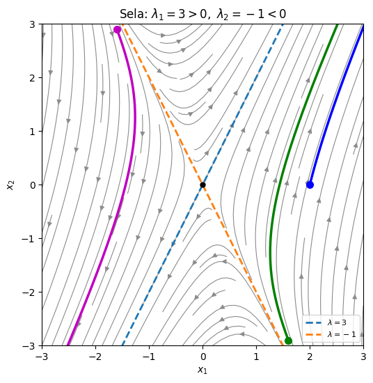
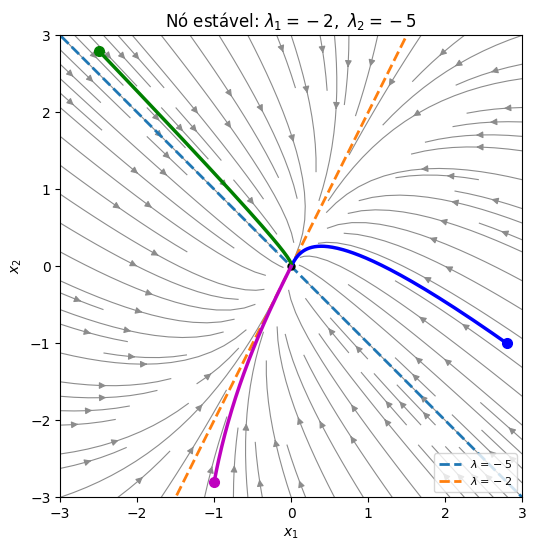

Autovalores Reais e Distintos#
Se \(A\) (\(n\times n\)) tem \(n\) autovalores reais e distintos \(\lambda_1,\dots,\lambda_n\), com autovetores \(\mathbf{v}^{(1)},\dots,\mathbf{v}^{(n)}\), esses autovetores são automaticamente linearmente independentes (vimos isso na aula de autovalores), e a solução geral é
É o caso mais simples, e também o que tem a interpretação geométrica mais clara: cada autovetor define uma reta invariante pela origem. Uma solução que começa sobre um autovetor \(\mathbf{v}\) fica sempre sobre essa reta, afastando-se da origem se \(\lambda>0\) ou aproximando-se dela se \(\lambda<0\).
Vamos usar uma função auxiliar para desenhar retratos de fase, com os autovetores em tracejado:
import numpy as np
import matplotlib.pyplot as plt
import sympy as sp
from scipy.integrate import solve_ivp
def retrato(A, ax, lim=3, titulo=None, autovetores=True):
# Desenha o retrato de fase de x' = A x no quadrado [-lim, lim]^2
A = np.array(A, dtype=float)
s = np.linspace(-lim, lim, 40)
X, Y = np.meshgrid(s, s)
U = A[0, 0]*X + A[0, 1]*Y
V = A[1, 0]*X + A[1, 1]*Y
ax.streamplot(X, Y, U, V, color='0.55', density=1.1, linewidth=0.8, arrowsize=1)
if autovetores:
lam, vec = np.linalg.eig(A)
if np.all(np.abs(lam.imag) < 1e-12):
pares = list(zip(lam.real, vec.T.real))
if abs(lam[0] - lam[1]) < 1e-6:
pares = pares[:1]
for l, v in pares:
ax.plot([-3*lim*v[0], 3*lim*v[0]], [-3*lim*v[1], 3*lim*v[1]],
'--', linewidth=2, label=fr'$\lambda={l:.3g}$')
ax.legend(loc='lower right', fontsize=8)
ax.plot(0, 0, 'ko', markersize=5)
ax.set_xlim(-lim, lim); ax.set_ylim(-lim, lim); ax.set_aspect('equal')
ax.set_xlabel('$x_1$'); ax.set_ylabel('$x_2$')
if titulo:
ax.set_title(titulo)
def trajetoria(A, x0, T, ax, cor='b'):
# Integra x' = A x a partir de x0 e desenha a trajetória
A = np.array(A, dtype=float)
sol = solve_ivp(lambda t, x: A @ x, (0, T), x0, max_step=T/500)
ax.plot(sol.y[0], sol.y[1], color=cor, linewidth=2.5)
ax.plot(x0[0], x0[1], 'o', color=cor, markersize=7)
return sol
Exemplo 1: autovalores de sinais opostos (sela)#
Resolva
Autovalores: \(\operatorname{tr}A=2\) e \(\det A=1-4=-3\), então
Autovetores: para \(\lambda_1=3\), \((A-3I)\mathbf{v}=\begin{pmatrix} -2 & 1\\ 4 & -2\end{pmatrix}\mathbf{v}=\mathbf{0}\) dá \(v_2=2v_1\), ou seja, \(\mathbf{v}^{(1)}=\begin{pmatrix} 1\\ 2\end{pmatrix}\). Para \(\lambda_2=-1\), \((A+I)\mathbf{v}=\begin{pmatrix} 2 & 1\\ 4 & 2\end{pmatrix}\mathbf{v}=\mathbf{0}\) dá \(v_2=-2v_1\), ou seja, \(\mathbf{v}^{(2)}=\begin{pmatrix} 1\\ -2\end{pmatrix}\).
Solução geral:
Condição inicial: em \(t=0\), \(c_1\begin{pmatrix} 1\\ 2\end{pmatrix}+c_2\begin{pmatrix} 1\\ -2\end{pmatrix}=\begin{pmatrix} 2\\ 0\end{pmatrix}\), ou seja, \(c_1+c_2=2\) e \(2c_1-2c_2=0\). Logo \(c_1=c_2=1\) e
A = np.array([[1, 1], [4, 1]])
fig, ax = plt.subplots(figsize=(6, 6))
retrato(A, ax, lim=3, titulo=r"Sela: $\lambda_1=3>0,\ \lambda_2=-1<0$")
trajetoria(A, [2, 0], 0.3, ax, cor='b')
trajetoria(A, [1.6, -2.9], 1.3, ax, cor='g')
trajetoria(A, [-1.6, 2.9], 1.3, ax, cor='m')
plt.show()

Repare no desenho:
Sobre a reta do autovetor \(\mathbf{v}^{(2)}=(1,-2)\) (com \(\lambda_2=-1<0\)), as soluções vão para a origem.
Sobre a reta de \(\mathbf{v}^{(1)}=(1,2)\) (com \(\lambda_1=3>0\)), as soluções fogem da origem.
Qualquer outra solução (como a verde e a magenta) chega perto da origem vindo pela direção de \(\mathbf{v}^{(2)}\), mas acaba sendo empurrada para longe pela direção de \(\mathbf{v}^{(1)}\): quando \(t\to\infty\), o termo \(e^{3t}\) domina e \(\mathbf{x}(t)\approx c_1\mathbf{v}^{(1)}e^{3t}\). A solução do nosso PVI (azul) começa longe da reta de \(\mathbf{v}^{(2)}\) e foge quase imediatamente.
Esse retrato de fase é chamado de ponto de sela (lembra as curvas de nível de uma sela de cavalo). A origem é instável: basta um pequeno desvio para fora da reta de \(\mathbf{v}^{(2)}\) para a solução fugir.
Exemplo 2: dois autovalores negativos (nó estável)#
Encontre a solução geral de
Aqui \(\operatorname{tr}A=-7\) e \(\det A=12-2=10\):
Para \(\lambda_1=-2\): \((A+2I)\mathbf{v}=\begin{pmatrix} -2 & 1\\ 2 & -1\end{pmatrix}\mathbf{v}=\mathbf{0}\), então \(\mathbf{v}^{(1)}=\begin{pmatrix} 1\\ 2\end{pmatrix}\). Para \(\lambda_2=-5\): \((A+5I)\mathbf{v}=\begin{pmatrix} 1 & 1\\ 2 & 2\end{pmatrix}\mathbf{v}=\mathbf{0}\), então \(\mathbf{v}^{(2)}=\begin{pmatrix} 1\\ -1\end{pmatrix}\). A solução geral é
A = np.array([[-4, 1], [2, -3]])
fig, ax = plt.subplots(figsize=(6, 6))
retrato(A, ax, lim=3, titulo=r"Nó estável: $\lambda_1=-2,\ \lambda_2=-5$")
for x0, cor in [([2.8, -1], 'b'), ([-2.5, 2.8], 'g'), ([-1, -2.8], 'm')]:
trajetoria(A, x0, 4, ax, cor=cor)
plt.show()

Agora as duas exponenciais decaem, e todas as soluções vão para a origem: ela é assintoticamente estável. Esse retrato é chamado de nó estável.
Repare num detalhe: as trajetórias chegam à origem tangentes ao autovetor de \(\lambda_1=-2\), o autovalor «mais lento». Como \(e^{-5t}\) morre muito mais rápido que \(e^{-2t}\), depois de pouco tempo sobra \(\mathbf{x}(t)\approx c_1\mathbf{v}^{(1)}e^{-2t}\): a solução se alinha com a direção lenta. (É exatamente isso que acontece no modelo de leucemia, como veremos na aula de aplicações.)
Se os dois autovalores fossem positivos, o desenho seria o mesmo, com as setas invertidas: todas as soluções fugiriam da origem, num nó instável. (Trocar \(A\) por \(-A\) troca o sinal dos autovalores e inverte o sentido do tempo.)
Exemplo 3: um sistema \(3\times3\)#
Encontre a solução geral de
Já calculamos os autovalores e autovetores dessa matriz na aula de autovalores: \(\lambda_1=2\), com \(\mathbf{v}^{(1)}=(1,1,1)\), e o autovalor duplo \(\lambda_2=\lambda_3=-1\), com dois autovetores independentes, \(\mathbf{v}^{(2)}=(1,0,-1)\) e \(\mathbf{v}^{(3)}=(0,1,-1)\). Os autovalores não são todos distintos, mas isso não atrapalha: temos três autovetores LI, que dão três soluções independentes:
Como \(\lambda_1=2>0\), a origem é instável. Mas repare: as soluções com \(c_1=0\), que começam no plano gerado por \(\mathbf{v}^{(2)}\) e \(\mathbf{v}^{(3)}\) (o plano \(x_1+x_2+x_3=0\)), ficam nesse plano e vão para a origem. É a versão em três dimensões de uma sela.
Resumo: autovalores reais e distintos (\(2\times2\))#
A solução geral é \(\mathbf{x}(t)=c_1\mathbf{v}^{(1)}e^{\lambda_1t}+c_2\mathbf{v}^{(2)}e^{\lambda_2t}\), e o retrato de fase depende dos sinais dos autovalores:
Autovalores |
Retrato de fase |
Estabilidade da origem |
|---|---|---|
\(\lambda_1<0<\lambda_2\) |
sela |
instável |
\(\lambda_1,\lambda_2<0\) |
nó estável |
assintoticamente estável |
\(\lambda_1,\lambda_2>0\) |
nó instável |
instável |
Ligação com traço e determinante. Como \(\lambda_1+\lambda_2=\operatorname{tr}A\) e \(\lambda_1\lambda_2=\det A\), nem precisamos calcular os autovalores para saber o tipo. Os autovalores são reais e distintos quando \(\Delta=(\operatorname{tr}A)^2-4\det A>0\), e então:
\(\det A<0\): autovalores de sinais opostos, sela;
\(\det A>0\) e \(\operatorname{tr}A<0\): os dois negativos, nó estável;
\(\det A>0\) e \(\operatorname{tr}A>0\): os dois positivos, nó instável.
Confira nos exemplos: no Exemplo 1, \(\det A=-3<0\) (sela); no Exemplo 2, \(\det A=10>0\) e \(\operatorname{tr}A=-7<0\) (nó estável).